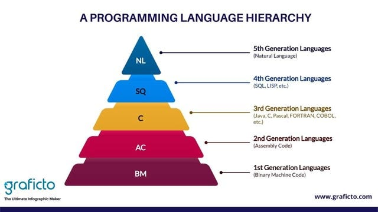

Programski jeziki
Cilji
Dijak zna razložiti, kaj je programski jezik
Dijaki
spoznajo različne vrste programskih jezikov glede na namen in uporabo
spoznajo generacije jezikov in splošne strokovne pojme, povezane s programskimi jeziki.
Pojmi Programski jezik,
sintaksa,
semantika,
postopkovni jeziki,
nepostopkovni jeziki,
objektni jeziki,
Def. 1: Programski jezik je umetni jezik, namenjen reševanju problemov z računalnikom. V programskem jeziku napišemo navodila - program, ki ga izvedemo na računalniku. Program moramo pred izvajanjem še prevesti v računalniku razumljiv jezik – strojni jezik.
Def. 2: A programming language is a formal language comprising a set of instructions that produce various kinds of output. These languages are used to implement algorithms and control the behavior of machines, particularly computers. [vir: Copilot na vprašanje What is programming language?]
Def. 3: Programski jezik je (samo) jezik, ki si ga je nekdo izmislil in naučil računalnik, da ga »razume«. [Vir]
Vprašanje: Si lahko kdorkoli izmisli svoj programski jezik? Če da, za kaj mora (še) poskrbeti, da ga lahko uporabi?
Pogramski jeziki: C++, C#, java, python, SQL,
Da, lahko. Poskrbeti mora za besede, za pravila in tudi za prevod v strojni jezik - prevajalnik. Moramo napisati (sprogramirati) prevajalnik.
Da bo programski jezik razumljiv tudi za računalnik, ga moramo prevesti v strojni jezik. Postopek se imenuje prevajanje (compiling).
Vrste programskih jezikov
Programskih jezikov je zelo veliko. Razvrstimo jih lahko v skupine:
po namembnosti - vrstah problemov, ki jih z njimi rešujemo (splošni, spletni, realno časovni, … )
kronološko, po času nastanka (generacije)
še kako 😊
| proceduralni | objektni | funkcijski | spletni | splošni | označevalni | |
|---|---|---|---|---|---|---|
| java | x | x | x | |||
| php | x | x | x | x | ||
| Lisp | x | |||||
Za radovedne
Programming languages can be broadly categorized into several types based on their features and use cases. Here are some of the main types:
Procedural Languages: These languages follow a set of instructions in a sequential manner. Examples include C, Pascal, and Fortran.
Object-Oriented Languages: These languages are based on the concept of “objects,” which can contain data and code. Examples include Java, C++, and Python.
Functional Languages: These languages focus on mathematical functions and avoid changing-state and mutable data. Examples include Haskell, Lisp, and Erlang.
Scripting Languages: These are often used for automating tasks and are usually interpreted rather than compiled. Examples include JavaScript, Python, and Ruby.
Markup Languages: These are used to define the structure and presentation of raw text. Examples include HTML, XML, and Markdown.
Logic Programming Languages: These languages are based on formal logic. An example is Prolog.
Concurrent Languages: These languages are designed to handle concurrent processes. Examples include Go and Erlang.
Database Query Languages: These are used to manage and manipulate databases. Examples include SQL and PL/SQL.
Each type of programming language has its own strengths and is suited to different kinds of tasks. Do you have a specific type you’re interested in learning more about?
Generacije programskih jezikov

Vir: https://medium.com/@ajuatahcodingarena/generations-of-programming-languages-bed30d19ea8e

Generacije PJ - Vir: https://www.geeksforgeeks.org/generation-programming-languages/
Binarni jezik – strojna koda (Binary Machine Code)
Zbirnik (Assembly Code)
Višji programski jeziki – Java, C, Pascal, C++, C#, Python, ..)
Povpraševalni jeziki, jeziki umetne inteligence – SQL, LIST, … )
Naravni jeziki (Natural language)
| Generacija | Primer | Prednosti | Slabosti | Konnkretni Primer |
|---|---|---|---|---|
| 1. | Strojni jezik (strojna (binarna) koda – ang. Machine language |
|
|
01000110010010101001010101010010010 |
| 2. | Zbirnik - Assembly language | |||
| 3. | C++, Java, Python, C#, PHP, |
|
|
print("petek") x = 7 if x == 7: print("x je 7") |
| 4. | SQL, MATLAB | |||
| 5. | Prolog, Mercury |
| Generacija | Primer | Prednosti | Slabosti | Primer |
|---|---|---|---|---|
| 1. | Strojni jezik (strojna (binarna) koda – ang. Machine language |
|
|
0100101001000101010 |
| 2. | Zbirnik - Assembly language |
|
|
mov fa,11 push 11 |
| 3. | C++, Java, Python, C#, PHP, |
|
|
if( age >= 18) print »ti si polnoleten« else print »ti si mladoleten« |
| 4. | SQL, MATLAB |
|
|
SELECT ime, priimek FROM dijak WHERE starost > =18 |
| 5. | Prolog, Mercury |
|
|
Here are some key aspects of programming languages:
Syntax: This refers to the set of rules that define the combinations of symbols that are considered to be correctly structured programs in that language.
Semantics: This refers to the meaning of the symbols, expressions, and statements within the language.
Pragmatics: This involves the practical aspects of using the language, including how it is used to solve problems and how it interacts with other languages and systems.
Types: Programming languages can be categorized into various types, such as procedural, object-oriented, functional, scripting, and more.
Compilation and Interpretation: Some languages are compiled, meaning the code is translated into machine language before execution. Others are interpreted, meaning the code is executed directly by an interpreter.
Programming languages enable developers to write programs that can perform a wide range of tasks, from simple calculations to complex data processing and artificial intelligence.
Za radovedne
What are some common use cases for assembly language?
Assembly language is often used in scenarios where direct hardware manipulation, access to specialized processor instructions, or critical performance optimization is required. Here are some common use cases:
Device Drivers: Assembly language is used to write device drivers that control hardware components like printers, disk drives, and graphics cards1.
Embedded Systems: Many embedded systems, such as those in automotive controls, medical devices, and consumer electronics, use assembly language for efficient and precise control1.
Real-Time Systems: Real-time systems, which require timely and deterministic responses, often rely on assembly language to meet strict timing constraints1.
Operating System Kernels: Parts of operating system kernels, especially those that need to interact closely with hardware, are written in assembly language for performance and control2.
Performance-Critical Applications: In applications where performance is critical, such as high-frequency trading systems or scientific computing, assembly language can be used to optimize specific routines1.
Bootloaders: Bootloaders, which initialize the operating system when a computer starts, are often written in assembly language to ensure they run efficiently and correctly2.
Reverse Engineering and Security: Assembly language is used in reverse engineering and security research to analyze and understand the behavior of software at a low level1.
Vir: https://en.wikipedia.org/wiki/List_of_programming_languages